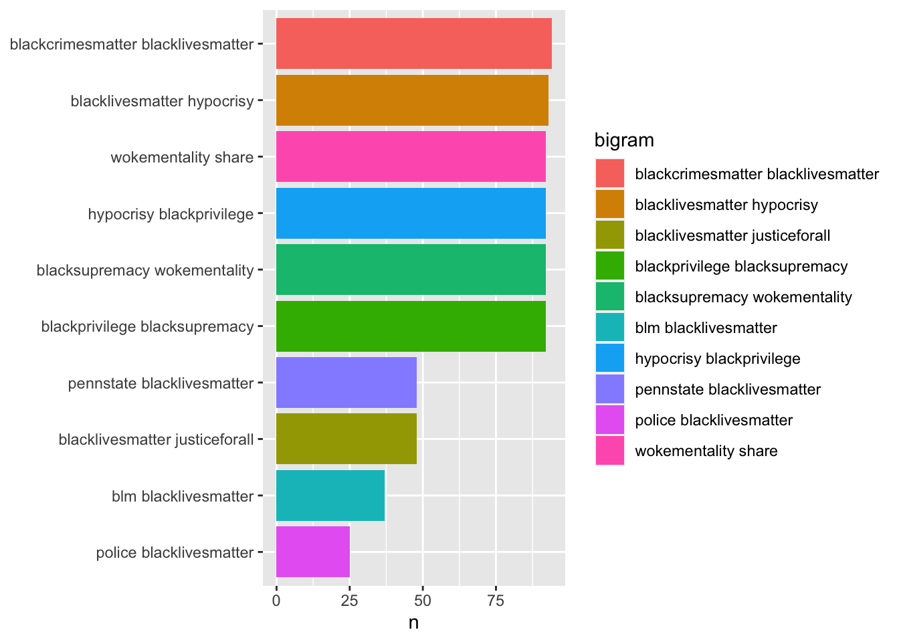

Chapter 10 Publishing
We can create publishable documents that include text, links, code and data visualizations, and put them online for free -all through R Studio.
R Studio - now becoming Posit - uses a publishing system called Quarto. Quarto allows content authors to combine text and executable code from a variety of languages into a responsive, verifiable web page. (It can also make books and presentations, but that’s another story.)
Usually, R users do an analysis in an R Script file, and if things go well and are worthy of being shared, they copy & paste their code into ‘code chunks’ in a new Quarto document. Let’s try that process, but we’ll write our code from scratch (you can just copy and paste my code directly from this textbook into your Quarto document).
10.1 Creating a new Quarto document
Before creating a Quarto file, let’s create a new project. This will make publishing much easier. Note that creating a project closes all of your open files in R Studio, so start by saving everything. Then:
‘File’ -> ‘New Project…’
You must specify where the project will reside on your hard drive.
Now go to ‘File’ -> ‘New File…’ -> ‘Quarto Document,’ give it a name, and hit OK.
The first thing you’ll notice is that a new Quarto document is not blank - it’s filled with content. This content is meant to act as examples of how to use Quarto to create and style text, links, code and visualizations.
At the very top is the header, separated from the rest of the document by dashes. Just leave that section along for now.
Before deleting the rest of the content, note that it give examples of the most common tasks in Quarto: making links, adding code, controlling if code exectues, etc. You’ll also notice there’s a small table of contents in the upper-right corner of your new document. Any time you create text with a ‘header 2’ designation, it’ll mark a new section in your table of contents. (For those of you that know HTML, this is an <h2> tag.)
Let’s delete everything after the header and practice creating a new project from scratch.
Text can simply be typed and then formatted from the text style options at the top of the Source pane in R Studio. It’s just like using Google Docs or Microsoft Word to create italic text, bullet lists, tables, or anything else.
Start by creating a project title - I’ll name mine ‘Publishing Example.’ Then highlight this text, and select ‘Heading 1’ from the drop-down menu at the top of the Source panel.
A Heading 1 acts as a Title attribute to your page. By the way, each time you add a ‘Header 2’ - the second-largest headline text - Quarto will automatically add that text to the Table of Contents, on the assumption that you are creating a new section. Very convenient.
After our Title, let’s insert some text - an introductory paragraph. I usually use this to introduce the idea behind a project, where I got the data from, and what I expect to see in the results.
Try adding a link in that paragraph - highlight any text, then choose the ‘link’ icon in the menu above the Source panel.
10.2 Code Chunks
What makes a Quarto document unique is its ability to read and execute your R code. Code must be added in code chunks; while there is an option to add one in both the ‘Code’ drop-down menu and the green ‘+’ button above the Source window, I find the shortcut to adding an R code chunk much more useful: Command-Option-I (on a PC: Control-Alt-I)
Creating a code chunk shows ‘r’ in curly brackets, with a highlighted area where your code goes. Let’s add here:
library(tidyverse)
library(babynames)
Note that we are loading our necessary libraries, but not installing anything. Install commands do not work in Quatro documents; instead, open a new R Script file and run your package install. And remember, packages only be installed once, but must be loaded for each R session.
Let’s test if we did this right, by clicking on the green arrow on the right-hand side of the code chunk. This will ‘play’ the code and show the results.
library(tidyverse)
library(babynames)Note that loading the tidyverse produces a long, unnecessary message about packages and conflicts. Let’s hide that from our audience by adding a comment at the top of the code chunk that acts as a command: to not include the messages resulting from our code in our project’s output. It looks like this:
| #message: false
I’ll plug that line in right under the {r} declaration of the code chunk, and here are the results:
library(tidyverse)
library(babynames)That’s better. The code executes, but no one ‘sees’ the messages.
Now let’s try to create a visualization, by writing code that asks (and answers) a question. How about:
What were the most common Male names of the 20th Century?
I like to rephrase this in English: “Take babynames, filter to the years 1900-2000, filter out women.
In the question, ‘most common’ is asking about the count of names, or n, not prop, which is the proportion of a name’s usage relative to the other names of that year.
To get that, we’d need to pivot - or, in R, summarize: the total number of people with each name is equal to the sum of their n values.
After that, in order to visualize it, let’s be be sure to arrange the results in order of total before limiting to just the top, say, 10 results.
In our ggplot, let’s put names on the x axis and total on the y, with each name having a hue based on the value of n. This will be a column chart, and let’s flip it sideways to maximize readability. Here’s my code for that:
babynames %>%
filter(sex == "M") %>%
filter(year > 1900 & year < 2000) %>%
group_by(name) %>%
summarize(total = sum(n)) %>%
arrange(desc(total)) %>%
head(10) %>%
ggplot(aes(reorder(name,total), total, fill = total)) +
geom_col() +
coord_flip()
The X axis is using scientific notation, as the numbers are pretty large. I want to change that - it’s a simple line of code in R - but I don’t need my audience to see it.
So I’ll add #| echo: false to the code chunk - I’d also move it to the top of the document, so it applies to all visualizations:
Again, this means tell R not to use scientific notation on my visualizations. In addition, do not show this code to my audience.
Rendering that column chart should look better now:
babynames %>%
filter(sex == "M") %>%
filter(year > 1900 & year < 2000) %>%
group_by(name) %>%
summarize(total = sum(n)) %>%
arrange(desc(total)) %>%
head(10) %>%
ggplot(aes(reorder(name,total), total, fill = total)) +
geom_col() +
coord_flip()
There are many other options for how your page looks and functions, all of which can be found at quarto.org.
Let’s test to see if our page is ‘valid’ thus far, by rendering it: click the Render button at the top of your page, and see if any errors arise.
If they do, R Studio should alert you to where the error is and why it was thrown. If there are no errors, you should see your project in a pop-up browser window.
10.3 X11
If publishing on a Mac, it’s quite possible you’ll generate an error about X11, or XQuartz. Not to worry. XQuartz is just a system that allows applications to run cross-platform; it used to come pre-installed on Macs, but now we have to download and install it manually from here:
Go for it.
10.4 Quarto Pub
How does our work get online? By creating an account on quartopub.com: it’s free, publishes diurectly from the software we’re using, and can be easily updated.
After creating an account on quartopub.com, we use the Terminal to publish our content. Don’t worry, it’s easy!
Terminal is a command-line version of your Operating System. So, in the case of a Mac, it’s a UNIX command line. We don’t know UNIX. But when we installed Quarto, it installed across our entire computer, not just inside R Studio. Thus, quarto is a command in Terminal now.
Rather than launching Terminal as a standalone Application, R Studio has a ‘Terminal’ tab where the Console is. If you created a new project for your document, the Terminal should load in your project’s directory.
That’s important, as every instance of Terminal runs in a specific location on your hard drive. In this case, we need it to be in the same folder as your Quarto file - your project folder - in order to publish.
The act of publishing is ridiculously easy once everything is set up properly. Open the Terminal window in R Studio and type:
quarto publish
That should push your content to your_username.quartopub.com. Note that anything published on Quarto Pub is publicly available, and there’s a file size limit to how much you can put up there (currently set to 100MB). If you have multiple .qmd files in your project folder, it may make more sense to specify which file you want to publish, like so:
quarto publish publishing_test.qmd
You can also publish to other websites, such as GitHub, or your own personal site. Additionally, you can publish PDFs, slideshow presentations, websites, and even books - this entire textbook was written inside R Studio, and published and regularly updated with Quarto.
Re-publishing is done the same way, with any edits you make in R Studio replacing the ones online. Note that your online content doesn’t update automatically; you have to quarto publish each time you make changes.